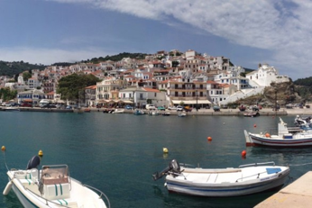

Ημερομηνία: 2 Ιανουαρίου 2018
Συντάκτης:

Απειλήθηκε επεισόδιο με κατοίκους και τους ελεγκτές της ΑΑΔΕ
Πρόστιμο 500 ευρώ σε έναν ηλικιωμένο ψαρά της Σκοπέλου επιχείρησαν να κόψουν ελεγκτές της Ανεξάρτητης Αρχής Δημοσίων Εσόδων επειδή δεν έκοψε απόδειξη 4 λεπτών για μια πλαστική σακούλα που έδωσε σε έναν πελάτη του.
Η κίνηση αυτή προκάλεσε την οργή των κατοίκων του νησιού που κινήθηκαν απειλητικά προς το μέρος τους και ηρέμησαν μόνο όταν διαβεβαιώθηκαν πως δεν θα επιβάλουν πρόστιμο στον ψαρά.
Σύμφωνα με την ιστοσελίδα skopelos-news.blogspot.gr, ο ηλικιωμένος ψαράς βρίσκονταν στο λιμάνι του νησιού και πουλούσε γόπες.
Ένας πελάτης αγόρασε ένα κιλό προς τρία ευρώ και έβαλε τα ψάρια σε μια πλαστική σακούλα. Τότε οι εφοριακοί τον ρώτησαν εάν ο ψαράς του έκοψε απόδειξη για 4 λεπτά καθώς του έδωσε πλαστική σακούλα.
Ο ψαράς διαπληκτίστηκε με τους ελεγκτές και όσοι βρίσκονταν στο λιμάνι κινήθηκαν απειλητικά προς το μέρος τους. Τελικά οι ελεγκτές της ΑΑΔΕ δεν έκοψαν πρόστιμο στον ηλικιωμένο ψαρά και αποφεύχθηκαν τα χειρότερα.
Πηγή: skopelos-news.blogspot.gr
Πηγή: www.patrasevents.gr